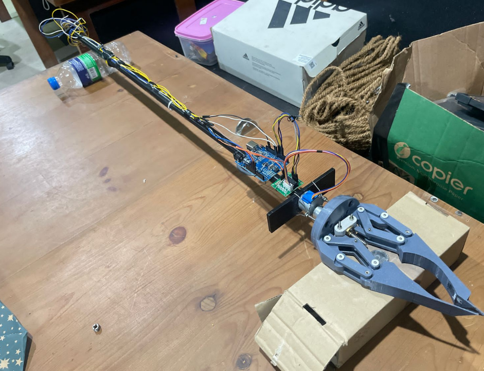
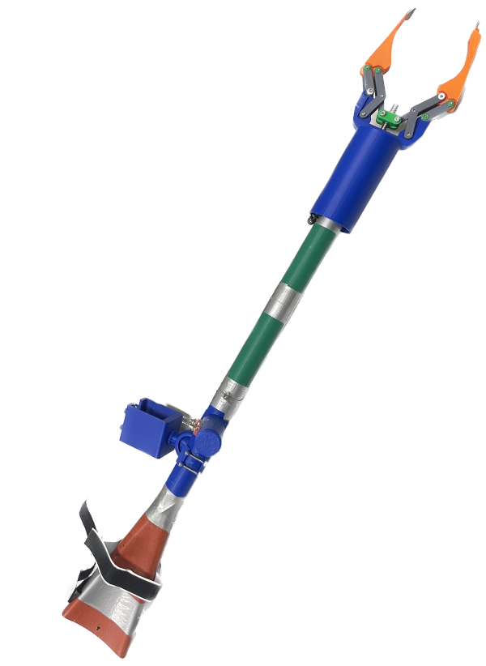
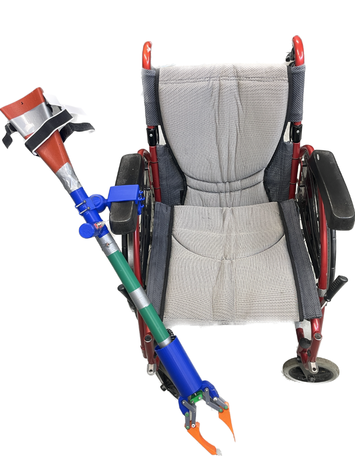
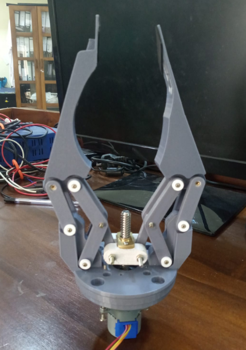

Final mechanism
A screw-driven slider-crank gripper was selected for stable actuation and a mechanically simple build. A motor-driven extendable stick brought the gripper within reach; a low-force push-button interface controlled operation.
 LOHAN ATAPATTU
LOHAN ATAPATTUAssistive technology · Product design · 2025
An electrically powered pickup device developed to help a wheelchair user with limited arm and hand strength retrieve everyday objects.

RESEARCH SUMMARY
Developed during a 29-week hybrid internship with the John NeuroBionics Lab at the University of Melbourne, this project translated a client’s daily challenges into an electrically powered grabber. The design brief centred on retrieving small household objects from a seated position, with low-effort controls and a practical reach.
I contributed to the gripper design and iterative development, including CAD modelling, prototype fabrication, mechanism exploration, integration, and testing. The project combined human-centred requirements with hands-on mechanical and electronic product development.
MECHANISM & ITERATION
Five mechanical iterations followed early testing of soft, suction, and conventional gripper ideas. Each design choice was assessed against the objects to be picked up, the user’s available strength, and practical assembly constraints.
A screw-driven slider-crank gripper was selected for stable actuation and a mechanically simple build. A motor-driven extendable stick brought the gripper within reach; a low-force push-button interface controlled operation.
Components were modelled in SolidWorks and rapidly prototyped with 3D printing. The team integrated the gripper with the actuating stick, added friction surfaces, and developed a coiled wire harness with printed guides to reduce cable tangling.
Soft robotic and gecko-inspired fingers were explored, followed by suction gripping for flat objects. These approaches were set aside when they could not reliably handle the target objects within the project’s weight and complexity constraints.
Prototype and preliminary human testing informed design changes. Cable snagging during retraction remained a challenge, and further work would refine cable routing, durability, and repeatable pick-and-place performance.
PROTOTYPE GALLERY
Selected images from the final device, wheelchair-use concept, and late-stage gripper iteration.


